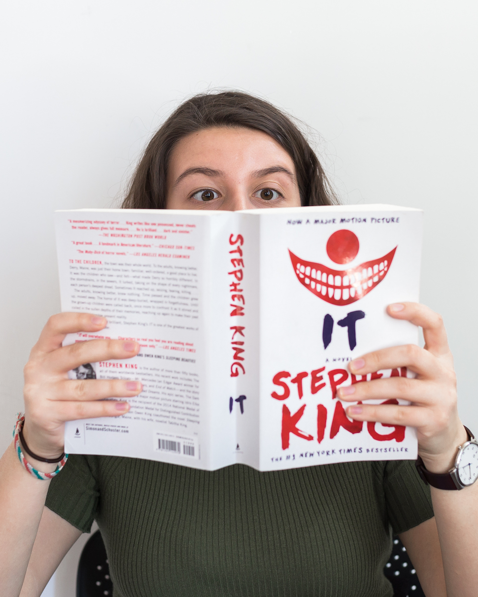
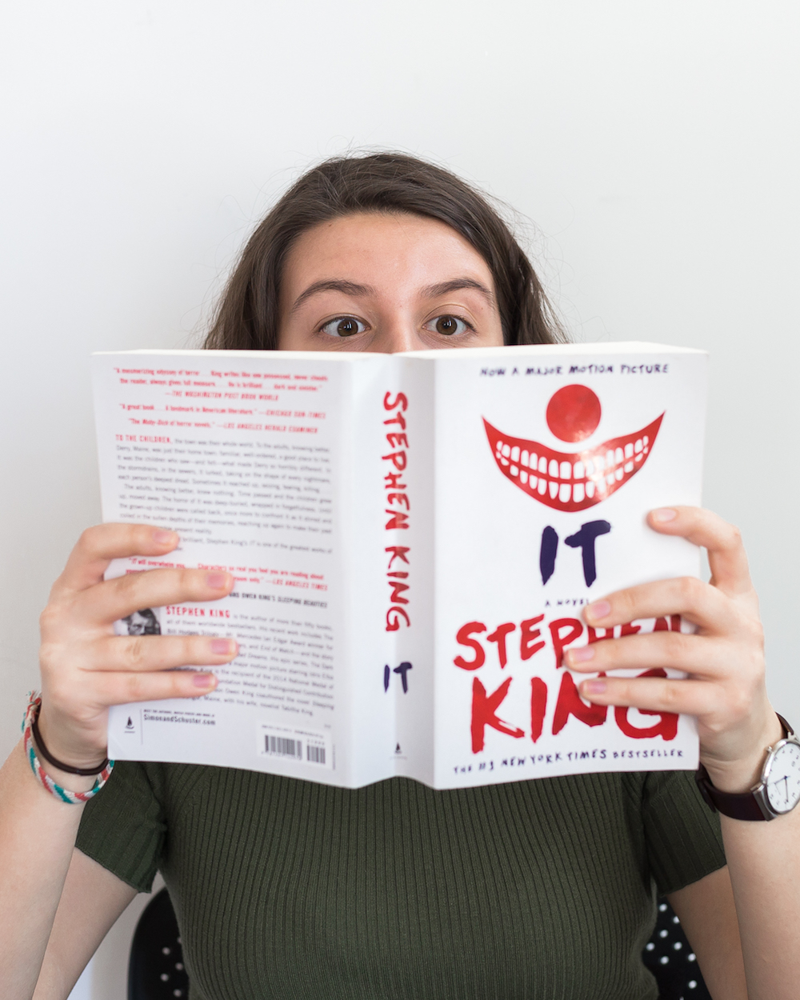

Natalie Duerr

 

I first became interested in design while working on my high school's yearbook during sophomore year. With very few art classes offered, I started out as a self taught designer. I am now pursuing a BFA in Design, with a concentration in Interactive Design, at Northeastern University, as well as minors in Computer Science and Art History. My portfolio showcases my ever-improving skills and work I have created over the past few years. My goal is to create meaningful interactions and experiences for all kinds of people, all around the world. I am always up for new design experiences and am willing to go above and beyond to make the project vision possible. When I'm not designing or programming, you can find me reading a good book, playing video games, discovering new music to listen to, or trying out new places to eat with my friends!
BFA in Design
Class of 2021 • Boston, MA
High School Diploma with Honors
Designer
Laser Monitor
Design Intern
HTML/CSS
Basic Java and Javascript
Microsoft Office
Apple iWork
CorrelDRAW
DrRacket